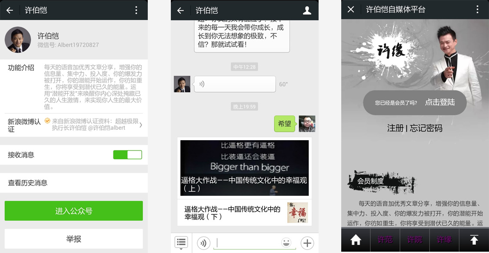

系统概述:
项目为亚洲超越极限国际有限公司许伯恺老师搭建运营个人自媒体微信公众平台。许伯恺，亚洲潜能激发训练大师，现任亚洲超越极限国际有限公司执行长。他潜心研究英、美、日本等世界大师潜能激发训练的精华，融合台湾顶尖企业的管理、服务和行动力，将所学的整合一套非常有效的训练系统“引爆生命力”。通过演讲和训练，激励人成无所畏惧的超人。
平台每天提供60秒语音消息，消息中含有关键字，通过回复关键字可查阅当日文章。同时开设第三方会员平台，实行分级会员制。通过课程管理，会员权限管理，支付功能，为不同级别会员提供不同课程。
案例图片:
